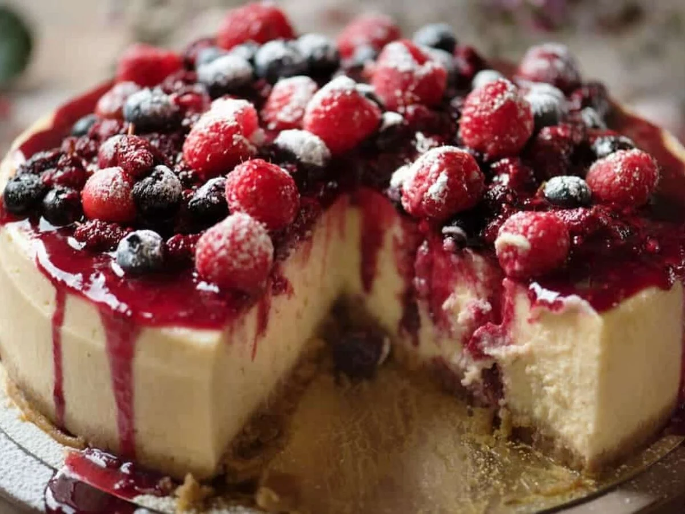

Receta de Cheesecake Casero
←

🧀 Ingredientes para la base
- 200g de galletitas (tipo Lincoln, MarÃa o Digestive)
- 80g de manteca derretida
🥄 Ingredientes para el relleno
- 500g de queso crema
- 200ml de crema de leche
- 150g de azúcar
- 3 huevos
- 1 cucharadita de esencia de vainilla
- Jugo de medio limón
📠Cobertura (opcional)
- Mermelada de frutos rojos, frutillas o dulce de leche
👩‍🍳 Paso a paso
- Triturar las galletitas hasta que queden como arena fina y mezclarlas con la manteca derretida.
-
Forrar la base de un molde desmontable con esta mezcla y presionar bien. Llevar al freezer por 15 minutos.
-
Batir el queso crema con el azúcar hasta integrar. Agregar los huevos de a uno, luego la vainilla, el jugo de
limón y la crema. Mezclar suave.
- Verter la mezcla sobre la base frÃa y hornear a 160°C durante 50-60 minutos (horno bajo).
-
Dejar enfriar a temperatura ambiente, y luego llevar a la heladera por al menos 4 horas (ideal de un dÃa para
otro).
- Agregar por encima la cobertura elegida antes de servir. ¡Listo para disfrutar!